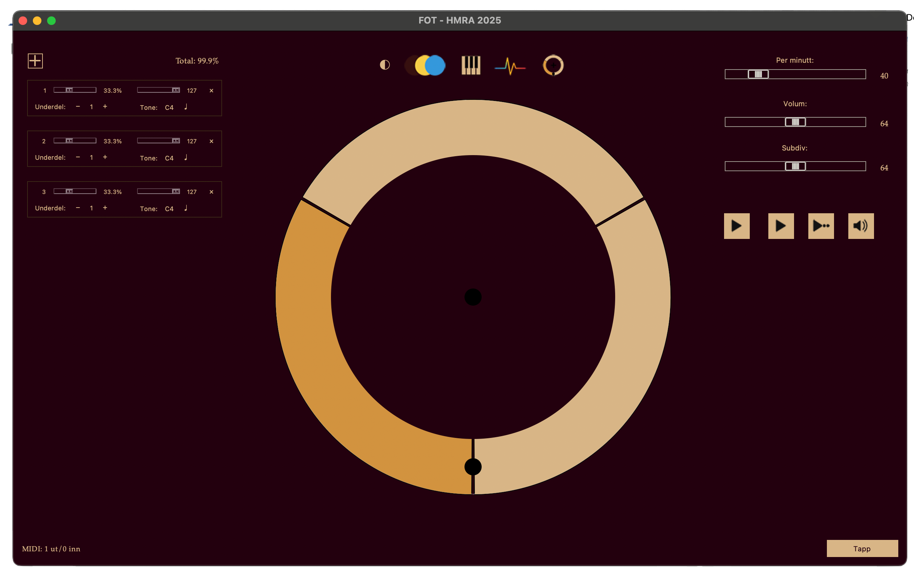

Om Fot
FOT (Folktronome / "fri metronom") er eit rytme- og tidsverktøy som gjer metronomen elastisk og kulturspesifikk. I staden for berre BPM og jamne slag arbeider FOT med syklusar ("takter") der kvar einskild beat kan få sin eigen tidsprosent, underdelingsstruktur, tyngd (velocity) og tone (MIDI‑note). Du kan forme interne mikro‑forskyvingar og aksentar slik dei faktisk er i tradisjonelle dansar og i levande "human" groove – t.d. Telespringar og Valdresspringar – eller lage heilt eigne asymmetriske pulssirklar. Appen støttar fleire samtidige instansar som kan startast/stoppast synkront via multicast, og gjev eit visuelt, interaktivt "slagkort"-grensesnitt for presis men fri rytmisk modellering.
Bilde frå hovedvindu
Bruksområde
- Utøvarar: Øv inn dans- og folkemusikkrytmar med ujamn intern mikrostruktur; tren timingkonsistens og aksentplassering
- Komponistar/Arrangørar: Bygg polymetriske eller asymmetriske taktformer ved å justere prosentfordeling og underdelingar per slag; eksportér til vidare bruk
- Folkemusikkpedagogar: Demonstrer korleis springarrytmar og andre tradisjonelle mønster avvik frå jamn kvartpuls; visualiser prosentfordeling og "feel"
- Improvisatørar: Skap fleksible tidsrammer der kjernepuls kan variere organisk, og test alternative indre proporsjonar i sanntid
- Forskarar/Analytikarar: Samle strukturerte timingdata (takter per minutt, gjennomsnitt takt tid, prosent per slag) for seinare statistisk analyse
- Ensemble / Dansepraksis: Distribuer synkron start/stopp og mute til fleire instansar i rommet; juster puls og aksentar live etter behov
- Undervisning i rytmisk presisjon: Vis interaktivt korleis endring av prosentsatsar, underdelingar og tyngd påverkar grooveoppleving
Funksjonar og verktøy
Grunnleggjande konsept
- CPM i staden for berre BPM: "Takter per minutt" (CPM) som syklisk tempoeining i tillegg til klassisk slagfølelse
- Prosentfordeling per slag: Kvar beat inne i syklusen kan få ein del av total takt‑tid (snittprosent) → modellering av ujamn intern struktur
- Slagkort (beat cards): Visuelle modulære "kort" for slag med slider (tyngd / prosent), underdelingstellar, og MIDI‑parametrar
- Underdeling per beat: Uavhengig styring av subdivisjonar (triolar, asymmetri, multiple) per enkelt slag via klikk (venstre +1, høgre −1, Alt *2)
- Tyngd og lyd: Eige volum for master og underdelingar; WAV-basert klikk (click.wav) med lydpanel (W)
- MIDI-notar per slag: Kvar beat kan få tildelt tonehøgde (midi_notes + velocity) for bruk med eksterne synthar eller pitch-vising
- EKG/Puls-graf: Eige panel (G) for visuell rytmisk "puls"/kurve
- Klaviaturpanel: Snarveg (K) for MIDI-toneveljar
Sequencer og tap-tempo
- Innebygd sequencer: Ta opp og lagre 9 separate takt‑loops, med høve til å leggje til og forme bassgangar per loop
- Presist tap‑tempo: Fangar nøyaktig sving (mikrotiming) når du spelar inn, slik at den levande "feel‑en" blir ein del av mønsteret
- MIDI‑eksport: Eksportér som MIDI‑map for å flytte swing‑profil og aksentstruktur rett inn i andre DAW‑ar og arbeide vidare med elastisk tidsflyt på tvers av prosjekt og plattformer

Bilde frå sequencer
Presets og kulturspesifikke rytmar
- Ferdige folkedansoppsett: Telespringar (T) og Valdresspringar (V) lastar inn førehandsdefinerte interne proporsjonar og aksentar
- Eksport / import av taktpreset: Lagra syklusdata (metronome_data) og henta dei seinare (Lagre / Importer meny)
- Lagra takt-strukturar i katalogar (lagratakter, Metronomes) for gjenbruk og deling
Multi‑instans og nettverk
- Opprette ny instans (@ eller plus‑ikon) med forskyvd plassering og nytt fargetema
- Synkron start/stopp og global mute via multicast (Enter, Shift+M) over lokal gruppe (239.255.0.1:50055)
- Lokal kontroll (P, M) vs global styring
- Logging av synk-/statusmelding til ~/Library/Logs/Fot/sync.log for feilsøking
Brukargrensesnitt og visingar
- Full vs Enkel vising (Z / --simple flagg) for å tilpasse kompleksitet i øvingssituasjonar
- Interaktiv sirkulær slag-/underdelingsvising (canvas) med direkte manipulasjon
- TaktTeller (tap‑tempo) som eige sidevindauge med datainnsamling av snittprosent, CPM og gjennomsnitt takt tid
- Fargetema og ikon-sett (play, stop, sound, mute, puls, piano, farge) i transport/toolbar
- Tooltips med snarvegar
Datainnsamling og analyse
- TaktTeller bereknar prosentfordeling per slag (snittprosent), takter per minutt (CPM) og gjennomsnittleg takt‑tid
- Intern spegling av sliderverdier og underdelingar for trådtrygg avspeling
- Kan nyttast til å sjå stabilitet og konsistens i tapping over tid
Snarvegar
Transport
- P (Start/Pause lokalt)
- Enter (Start/Stopp alle)
- M (Mute)
- Shift+M (Global mute)
Vising/panel
- Z (Enkel/full)
- W (Lydpanel)
- K (Klaviatur)
- G (Puls/EKG)
- . (Tap tempo)
- @ (Ny instans)
Dans/preset
- T (Telespringar)
- V (Valdresspringar)
Tempo/volum
- ←/→ (Tempo ned/opp)
- ↑/↓ (Mastervolum opp/ned)
- Shift+↑/↓ (Underdelingsvolum opp/ned)
- +/− (Legg til/fjern slag)
Unik verdi vs tradisjonell metronom
- Intern prosentdistribusjon gir modellering av ujamn tidsdeling (dans/groove) i staden for jamne underdelingar
- Beat‑spesifikke underdelingar gjev polymorf intern rytmikk utan å skifte global taktart
- Kulturspesifikke folkedanspresets (springar) innebygd med snarvegar
- Multi‑instans styring med synkron kommando (lokal + global)
- MIDI‑toner per slag + grafisk puls/"EKG" framstilling for både lyd og visuell koppeling
- Tapteller med analytisk tilbakerapportering (prosent per slag, CPM) for objektiv evaluering av "feel"
FOT er utvikla av Hans Martin Rundberg Austestad (2025). Prosjektet er merka som "fri metronom" og inviterer til vidare forbetring for eit friare metronomliv.
About Fot
FOT (Folktronome / "free metronome") is a rhythm and timing tool that makes the metronome elastic and culturally specific. Instead of just BPM and even beats, FOT works with cycles ("measures") where each individual beat can have its own time percentage, subdivision structure, weight (velocity), and pitch (MIDI note). You can shape internal micro-shifts and accents as they actually occur in traditional dances and living "human" grooves – e.g., Telespringar and Valdresspringar – or create entirely custom asymmetric pulse circles. The app supports multiple simultaneous instances that can be started/stopped synchronously via multicast, and provides a visual, interactive "beat card" interface for precise yet free rhythmic modeling.
Image from main window
Applications
- Performers: Practice dance and folk music rhythms with uneven internal microstructure; train timing consistency and accent placement
- Composers/Arrangers: Build polymetric or asymmetric time signatures by adjusting percentage distribution and subdivisions per beat; export for further use
- Folk Music Educators: Demonstrate how springar rhythms and other traditional patterns deviate from even quarter pulse; visualize percentage distribution and "feel"
- Improvisers: Create flexible time frames where core pulse can vary organically, and test alternative internal proportions in real-time
- Researchers/Analysts: Collect structured timing data (cycles per minute, average measure time, percentage per beat) for later statistical analysis
- Ensemble / Dance Practice: Distribute synchronous start/stop and mute to multiple instances in the room; adjust pulse and accents live as needed
- Teaching Rhythmic Precision: Show interactively how changing percentages, subdivisions, and weight affects groove experience
Features and Tools
Core Concepts
- CPM instead of just BPM: "Cycles per minute" (CPM) as cyclic tempo unit in addition to classic beat feel
- Percentage distribution per beat: Each beat within the cycle can get a portion of total measure time (average percentage) → modeling uneven internal structure
- Beat cards: Visual modular "cards" for beats with slider (weight/percentage), subdivision counter, and MIDI parameters
- Subdivision per beat: Independent control of subdivisions (triplets, asymmetry, multiples) per individual beat via click (left +1, right −1, Alt *2)
- Weight and sound: Separate volume for master and subdivisions; WAV-based click (click.wav) with sound panel (W)
- MIDI notes per beat: Each beat can be assigned pitch (midi_notes + velocity) for use with external synths or pitch display
- EKG/Pulse graph: Dedicated panel (G) for visual rhythmic "pulse"/curve
- Keyboard panel: Shortcut (K) for MIDI tone selector
Sequencer and Tap-Tempo
- Built-in sequencer: Record and save 9 separate measure loops, with the ability to add and shape bass lines per loop
- Precise tap-tempo: Captures exact swing (microtiming) when recording, so the living "feel" becomes part of the pattern
- MIDI export: Export as MIDI map to transfer swing profile and accent structure directly into other DAWs and work further with highly elastic time flow across projects and platforms
Image from sequencer
Presets and Culture-Specific Rhythms
- Ready-made folk dance setups: Telespringar (T) and Valdresspringar (V) load predefined internal proportions and accents
- Export / import of measure presets: Save cycle data (metronome_data) and retrieve later (Save / Import menu)
- Store measure structures in directories (lagratakter, Metronomes) for reuse and sharing
Multi-Instance and Network
- Create new instance (@ or plus icon) with offset placement and new color theme
- Synchronous start/stop and global mute via multicast (Enter, Shift+M) over local group (239.255.0.1:50055)
- Local control (P, M) vs global control
- Logging of sync/status messages to ~/Library/Logs/Fot/sync.log for debugging
User Interface and Displays
- Full vs Simple view (Z / --simple flag) to adjust complexity in practice situations
- Interactive circular beat/subdivision display (canvas) with direct manipulation
- MeasureTapper (tap-tempo) as dedicated side window with data collection of average percentage, CPM, and average measure time
- Color themes and icon sets (play, stop, sound, mute, pulse, piano, color) in transport/toolbar
- Tooltips with shortcuts
Data Collection and Analysis
- MeasureTapper calculates percentage distribution per beat (average percentage), cycles per minute (CPM), and average measure time
- Internal mirroring of slider values and subdivisions for thread-safe playback
- Can be used to monitor stability and consistency in tapping over time
Shortcuts
Transport
- P (Start/Pause locally)
- Enter (Start/Stop all)
- M (Mute)
- Shift+M (Global mute)
View/Panel
- Z (Simple/Full)
- W (Sound panel)
- K (Keyboard)
- G (Pulse/EKG)
- . (Tap tempo)
- @ (New instance)
Dance/Preset
- T (Telespringar)
- V (Valdresspringar)
Tempo/Volume
- ←/→ (Tempo down/up)
- ↑/↓ (Master volume up/down)
- Shift+↑/↓ (Subdivision volume up/down)
- +/− (Add/remove beat)
Unique Value vs Traditional Metronome
- Internal percentage distribution enables modeling of uneven time division (dance/groove) instead of even subdivisions
- Beat-specific subdivisions provide polymorphic internal rhythm without changing global time signature
- Culture-specific folk dance presets (springar) built-in with shortcuts
- Multi-instance control with synchronous command (local + global)
- MIDI tones per beat + graphical pulse/"EKG" representation for both sound and visual coupling
- Measure tapper with analytical feedback (percentage per beat, CPM) for objective evaluation of "feel"
FOT is developed by Hans Martin Rundberg Austestad (2025). The project is marked as "free metronome" and invites further improvement for a freer metronome life.